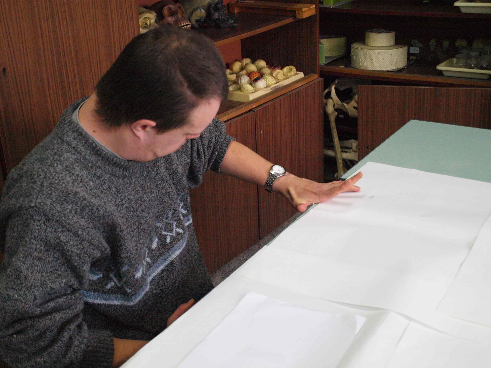
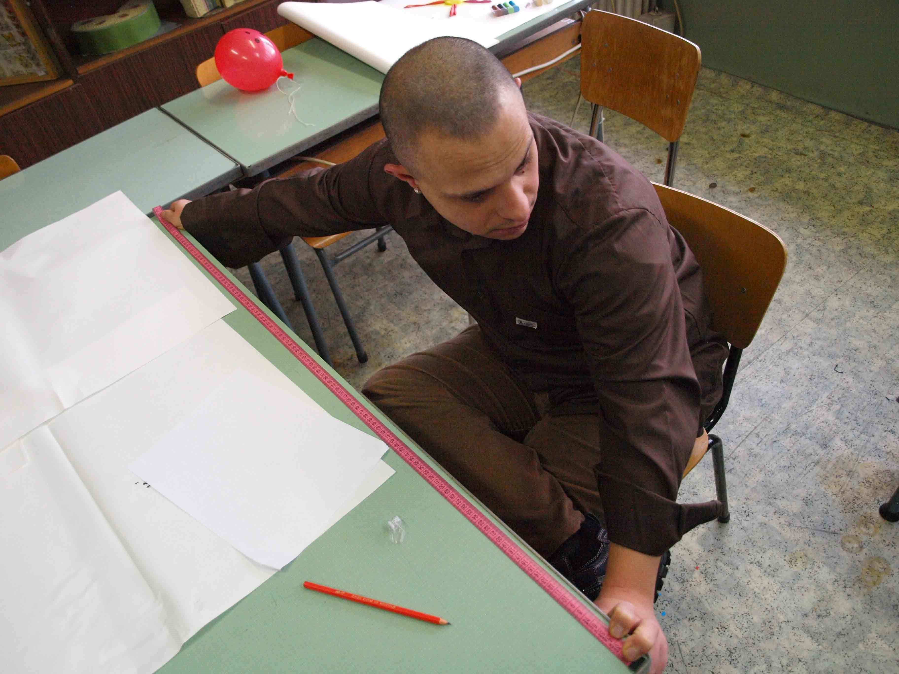
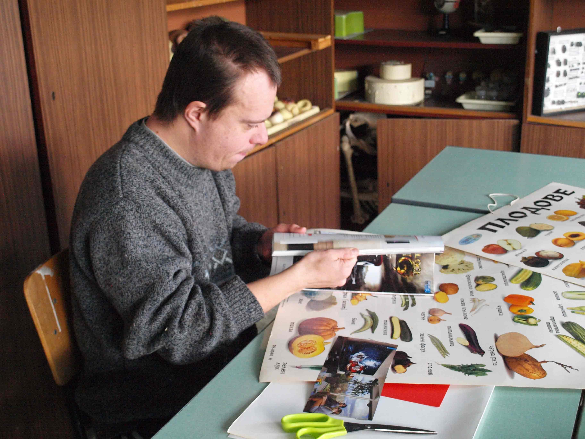
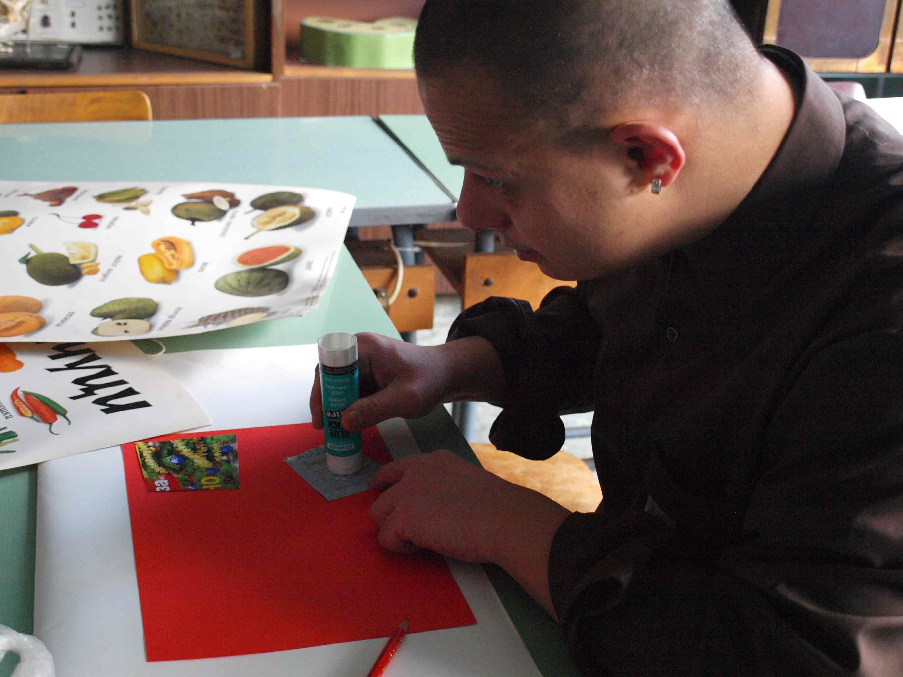
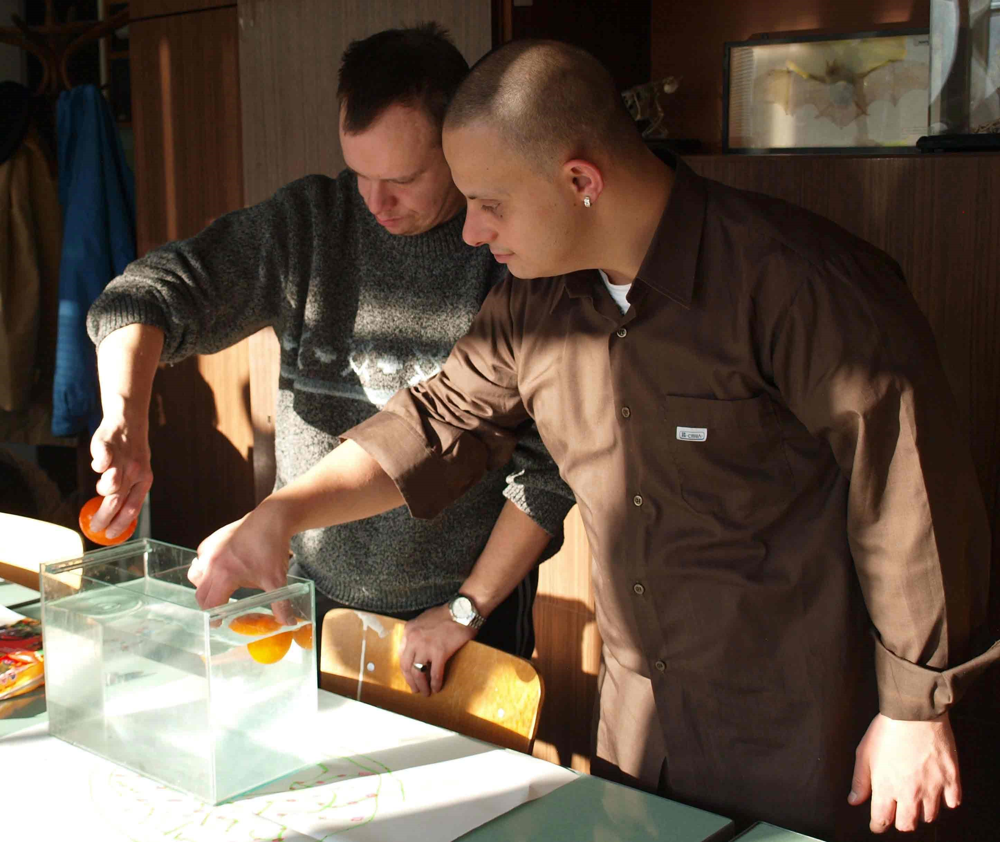
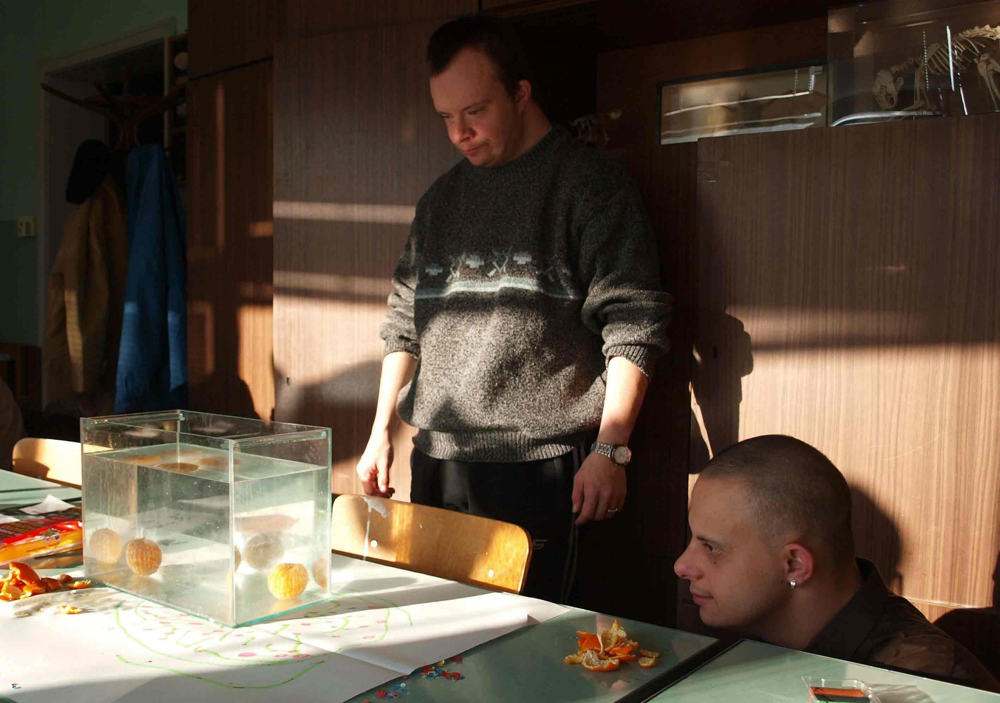
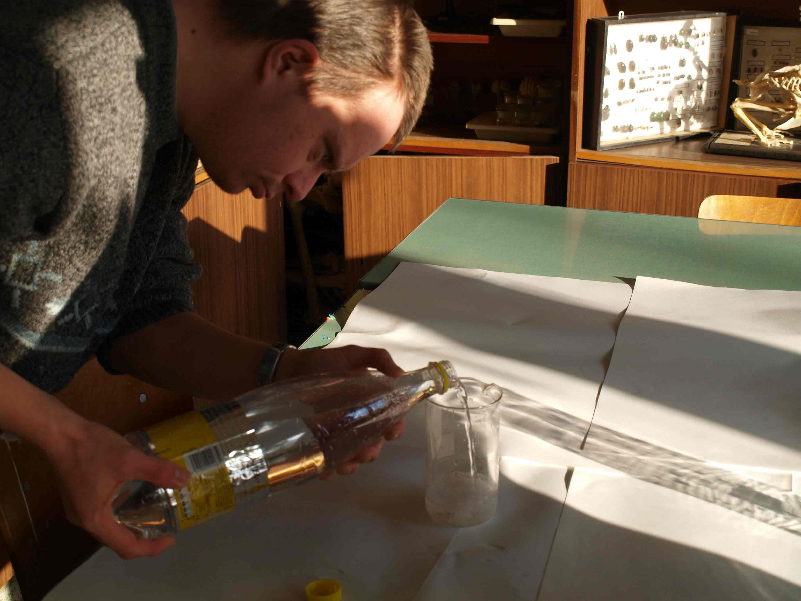
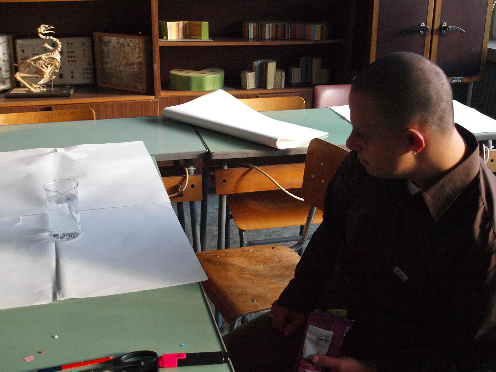
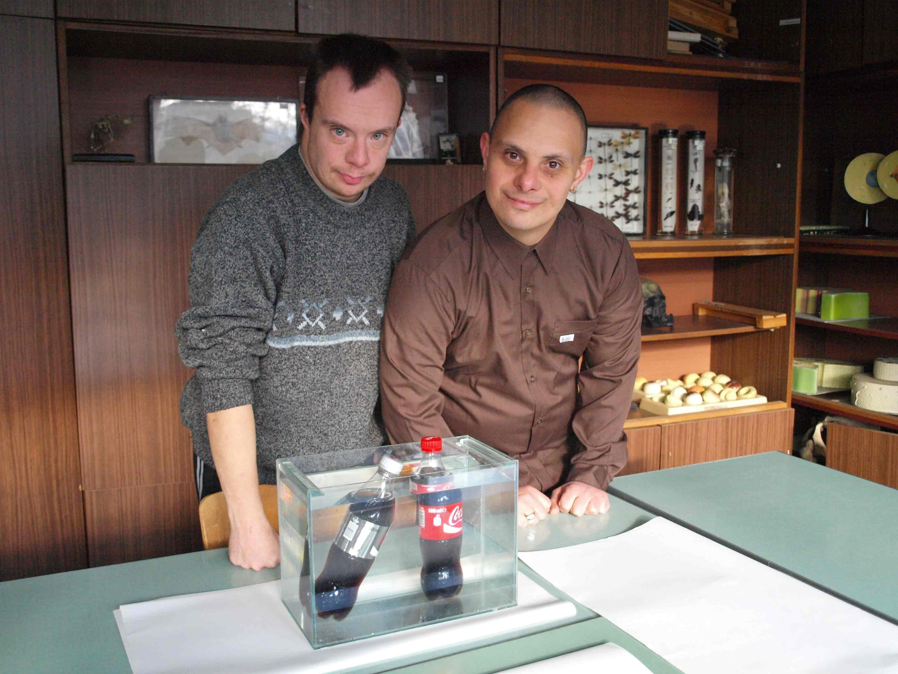

School Activities in Natural Sciences for Students with Special Needs in Bulgaria
Dr. Milen ZamfirovUniversity of Sofia
Dr. Svetoslava SaevaSouth-West University
Abstract
This study discusses the influence of classroom activities in the mainstream schools and special schools in Bulgaria. The study presents classroom activities related to the school subject Human and Nature. This school subject is part of the curriculum both at special and at mainstream schools. There are detailed explanations and descriptions as well as concrete methodological directions for each classroom activity. Some photographs are included in the text in order to achieve better visualization of the classroom activities described. The developed classroom activities in Natural Sciences for students with special needs, are just a small step in the understanding of the idea that all learners, regardless of their impairments, can participate in the learning process. This is in accord with the initiative of most nations to place more emphasis on the education of people with special needs, supporting their explorative aspirations and desire to know the surrounding world.
*Corresponding Author, Dr. Milen Zamfirov
(milen_zamphirov@abv.bg) Submitted Dec 18 2013
Accepted Dec 18 2013 Published online Dec 18 2013 DOI: 10.14448/jsesd.05.0003
INTRODUCTION
In recent years, the number of people with visual and auditory difficulties in the world who are engaged in science increases vastly, not only in paleontology and biology, where the examined subject can be touched, but also in observational sciences, such as astronomy and microbiology. The cause for this growth can be found in the perfected equal opportunities laws in education, in the access to a myriad of communication technologies, as well as in the ever-changing social conventions and concepts.
Regardless of the implemented educational integration in Bulgaria, the majority of disabled students still attend special education schools. There are four types of such establishments: specialized, auxiliary, convalescent and hospital schools.
The specialized institutions are divided into two categories – for students with hearing and vision loss. These students are accepted in the assigned schools after a complex psychological and cognitive evaluation for assessing their specific needs and educational abilities. The schools for auditory disabilities (three in Bulgaria) instruct children with hearing loss at 30 dB or above. The specialized schools for children with visual problems (two in Bulgaria) accept students with complete blindness, low vision and pupils with multiple or physical disabilities, whose sight does not allow them to attend other schools.
The auxiliary institutions (74 in count) teach students with mental retardation (including these with Down syndrome, autism, cerebral palsy, microcephaly) and many other disorders.
The convalescent establishments (10 in the country) accept learners in the moderate, compensatory and recuperating stages of any disease, which prevents them from attending regular kindergartens and schools.
Typical for these schools is the intensive medical care (performed are periodic exams by a physician or a physical therapist, retained by the respective municipality). In addition, a healthy diet, climatotherapy, therapeutic/remedial gymnastics and other healing programs are implemented. Some of the inhabitants might be arriving from sanatoriums. The pupils are accepted for a minimum period of one year.
Hospital schools (three in count) are attended by students temporarily hospitalized (with neurological, psychosomatic and other psychological disorders, and additional chronic conditions). Teachers visit the students in the hospitals. The instruction can continue from one month to one year, depending on the length of hospitalization. Before receiving treatment and after leaving the medical facility, these students attend regular schools.
The School Subject Surrounding World (Second Grade) and Human and Nature (Third to Sixth Grade) in Bulgaria and the Students with Special Needs
A universal fact is that teaching, whether in a standard or a specialized setting, yields better results when accompanied by experiments or classroom activities.
These are an indelible part of the learning process and serve as a foundation for establishing fundamental definitions in each school subject.
The major subjects, in which school activities are recommended, are Natural Science and Ecology. In Bulgaria (in elementary and middle school), these are Home Land (first grade); The World Around (second grade); Human and Nature (third – sixth grade); Physics and Astronomy (seventh grade); Biology and Health Education (seventh grade); Chemistry and Ecology (seventh grade).
Children between six and thirteen years of age demonstrate a very strong interest in nature and the environment. They want to learn how the world works and teachers become guides in their quests for knowledge, through exploration of the world.
However, for special needs students, things look differently. The importance of the classroom activities in the lessons designed for them is a perfect challenge, but the majority of students with disabilities do not exhibit a lot of interest in the natural sciences (Zamfirov, Popov, & Saeva, 2010). It is possible that they experience difficulty in defining and explaining everyday events, applying recently learned scientific laws. A great part of the learners interprets the world as too complicated to be understood and the natural phenomena, laws, and events are a distant matter (Zamfirov, 2012)
Major activities for the learners are observation, studying, experimentation, as methods for developing and advancing their cognitive, civic, and personal characteristics (Zamfirov, 2012).
The objective of The World Around education in Second grade is to satisfy children’s needs to navigate through their natural and social environments. This training has two goals. The first one is to acquire the knowledge of definitions and terminology in the classes in question, as well as to master the methods of investigation and study of the natural world (Tzanova & Tomova, 2005). The second aim is to instill interest and positive attitude in the students toward nature and the sciences explaining it. The Human and Nature class is essential, as its curriculum secures knowledge of the foundations and methods of exploration of multiple natural sciences.
The classroom activity, as an element of the syllabus, is an integral part of the educational process. Therefore, it can be concluded that students with special needs, regardless of their impediments, should be capable (to the extent of their abilities) of:
•
Describing the natural phenomena, utilizing appropriate terminology;
•
Analyzing processes;
•
Interpreting or developing studied or described models;
•
Formulating simple and straightforward hypotheses;
•
Performing experiments to test said hypotheses;
•
Realizing that the interdisciplinary aspects of the studied material in the Human and Nature class are practically everywhere.
One way for achieving these goals is by easy-to-complete and -comprehend activities, in the classes The World Around (second grade) and Human and Nature (third-sixth grade).
Natural Sciences are based on experiments and other classroom exercises. Conducting these, when working with special needs students, requires exceptional professional qualifications (Tafrova-Grigorova, Kirova & Boiadjieva, 2010).
Science explains how nature works. Through accumulating experiences from their own physical and social environment, children form their own ideas and concepts about physical, chemical, and biological phenomena, even before attending school. They are “forced” to do so, because of the necessity to foresee developments or explain the events happening around, or with, them, regardless of how far from the scientific model their notions are (Paulu & Martin, 1992).
When teaching subjects as The World Around and Human and Nature, instructors must stimulate the interest of special needs student, as well as change their preconceived erroneous concepts and models. It is a well-known fact that students learn best when they come to a conclusion, or to an explanation of a phenomenon, on their own. They gradually combine the newly acquired information with the previously accumulated one. W. Welz (Welz, 2006) proposes five stages of adding new knowledge to the already stored one: Engage, Explore, Explain, Elaborate, and Evaluate.
Engage
Firstly, the students must be engaged with a specific question cogitatively. This starting-off point captures their interest and ensures the sharing of knowledge on the topic. The learners can impart their own notions, ideas, and concepts on the subject matter.
Explore
The students perform activities which allow them to examine and test their ideas and comprehension of the explored issue. They explain the problem or the phenomenon in their own words. If the learners have erroneous notions, this second step’s purpose is to prove that their ideas and understanding on the subject cannot logically explain the particular phenomenon.
Explain
Logically, a rationalization follows every investigation. The teachers do not have to explain at this phase, because the students arrive to conclusions, based on the experiments and their personal journey to the correct results.
Elaborate
This stage allows the students to apply the learned material to different situations and to deepen their knowledge. It is important at this time that they compare ideas amongst each other.
Evaluate
This last phase has two goals: to allow for further understanding of the subject of inquiry and to assess the students’ knowledge on the matter.
The following classroom exercises have been described utilizing the Welz five-stage model.
Examples of specific classroom activities
The following instances provide an expanded view of the learning process, emphasizing the importance of the experiments/classroom activities.
The examples are components of, and not entire, lessons, developed and applied by the author in a school setting, with the participation of adolescents with Dawn syndrome.
Some of the classroom activities are very well known, while others have been created specifically for the purpose of familiarizing the students with particular concepts.
In the examples, we have tried to provide explanation for each testing, which cannot always be executed in a brief manner, but we have attempted to do just that.
The classroom activities are linked to particular classes, grades, and lesson subjects, to assist the teachers who work in a specific area of study, as well as to facilitate the creation of individual programs.
The classroom activities are developed based on the cognitive abilities of the majority of the learners being educated in the schools for children with special needs.
In the beginning of each academic year, in each school for students with special needs in Bulgaria, an individual program is created, which represents a description of educational activities planned for the whole year. Such program is prepared for each student educated in a special-needs school by a team of specialists – a speech therapist, a psychologist, a teacher.
In the span of a year, the personal programs of over 100 different students with mental retardation were studied, in several specialized schools in the country, which allowed for a general conclusion on their cognitive levels and abilities. Based on these results, over 30 classroom activities for students with disabilities (hearing loss and mental retardation) were developed. These exercises were consistent with the educational requirements in the subjects Home Land (first grade); The World Around (second grade); Human and Nature (third – sixth grade).
Activity: How can matter be measured? Grade: 3; Subject: Human and nature; Section: Bodies and matter
Suitable for students with: Mild mental retardation; upper limit of moderate mental retardation; hearing disabilities.
Description of activity
Standard and nonconforming methods for measuring can be utilized in this assignment.
Ask the students to:
1.
Estimate the length of their desks in “hands” (Engage). Then, request that they actually measure the length with their hands and record the number in their notebooks (Figure 1).

Figure 1: A moment in performing an activity “How can matter be measured” (estimate the length in “hands”)
2.
Approximate the same length in centimeters. Then again, ask the students to record the actual measurement in their pads. (Explore) (Figure 2)

Figure 2: A moment in performing an activity “How can matter be measured” (estimate the length in centimeters)
3.
Guestimate the width of the class room in “steps” (Engage). Also, they should record the real figure in their notebooks (Explore).
4.
Estimate the same dimension in meters (Engage). Again, students are assigned to perform the measuring in meters and to document the result.
5.
Determine the length of their desks in millimeters (Explore). How does this number relate to the result in centimeters? Students are asked to record their suppositions.
6.
Assess the width of the class room in centimeters (Explore). The learners are to compare this figure to the one in meters and record their opinion of the relationship between the two (Elaborate).
Methodological directions
After all of the abovementioned tasks have been completed, ask the students to:
1.
Compare the results in “hands” and “steps” of all classmates.
2.
State any similarities and variances in the obtained numbers (Explain).
3.
Explain what made an impression on them during the measuring of their desks in millimeters, centimeters and meters (Explain).
Upon completion of this section of the activity, you can ask the pupils the following questions (Baumann et all, 1993):
1.
If a tasty sandwich is being sold by a unit of one “hand”, would they prefer to purchase a sandwich from a salesperson with the largest hands possible or from one with the smallest. Why (Elaborate)?
2.
In their opinion, would the owner of the sandwich shop hire a salesclerk with large or small hands? Why (Elaborate and Evaluate)? Standardized units are used for all measurements and not parts of the body. Why (Elaborate and Evaluate)?
Activity: In what way can energy resources be utilized? Grade: 4; Subject: Human and nature; Section: Planet Earth
Suitable for students with: Mild mental retardation; moderate mental retardation; hearing disabilities.
Description of activity
1.
Ask the students to find a picture of a favorite food in a magazine (Figure 3), which they should cut out and glue to the top of a sheet of construction paper (Explore).

Figure 3: A moment in performing an activity “In what way can energy resources be utilized?” (find a picture of a favorite food in a magazine).
2.
Assign the task of documenting every necessary step in securing food and ask the learners to place them in order (Figure 4) (Explore).

Figure 4: A moment in performing an activity “In what way can energy resources be utilized?”
3.
Upon reviewing the stages, request the elimination of the unnecessary ones or the substitution of the inefficient ones, to show how much energy can be saved (Explain).
Methodological directions
1.
Which energy steps can you change or omit and still have food?
2.
Which stages can be excluded, in order to save energy?
3.
Which types of foods require the most energy?
How can the students apply the knowledge acquired in this activity:
1.
What can you do in the supermarket to save energy (Explain)?
2.
Why do you believe that our ancestors needed a lot less energy than us and our contemporaries (Elaborate and Evaluate)?
3.
Create a list of the energy steps required to obtain some goods.
Activity: Swimming tangerines; Grade: 4; Subject: Human and nature; Section: Planet Earth
Suitable for students with: Mild mental retardation; moderate mental retardation; hearing disabilities.
Description of activity
Ask the students to submerge a tangerine in water (Engage and Explore). It will float in the liquid (Figure 5).

Figure 5: A moment in performing an activity “Swimming tangerines”(submerge a tangerine in water)
Request the learners to peel the tangerine and to submerse it again (Figure 6) (Explore and Explain).

Figure 6: A moment in performing an activity “Swimming tangerines”(submerge a tangerine in water)
Methodological directions
Ask the following question: will the tangerines sink to the bottom, after being peeled?
The answer is “yes”! The loose skin of the fruit serves as a floatation device (Explain and Elaborate).
Activity: Raisins in a carbonated beverage; Grade: 4; Subject: Human and nature; Section: Planet Earth
Suitable for students with: Mild mental retardation; moderate mental retardation; hearing disabilities.
Description of activity
Ask students to drop a few raisins in a freshly opened bottle, or a poured glass, of any carbonated soft drink (Figure 7) (Engage and Explore).

Figure 7: A moment in performing an activity “Raisins in a carbonated beverage”(drop a few raisins in a carbonated soft drink)
Methodological directions
Ask the following questions: What would the raisins do?
1.
They will swim.
2.
They will sink.
3.
They will dissolve.
4.
Something else.
The correct answer is “D”. The raisins will initially sink, but then the bubbles will force them up to the surface (Explain and Elaborate). The process is repetitious (Figure 8).

Figure 8: A moment in performing an activity “Raisins in a carbonated beverage”
Activity: Coca-Cola or Coca-Cola light? Grade: 6; Subject: Human and nature; Section: Planet Earth
Suitable for students with: Mild mental retardation; moderate mental retardation; hearing disabilities.
Description of activity
Two 0.5 l bottles, one containing Coca-Cola and the other – Coca-Cola light, have been placed in a clear container. The vessel is slowly being filled with water (Explore). Once the liquid reaches the caps of the bottles, one of them (Coca Cola light) begins to float, while the other one (Coca Cola) remains at the bottom (Figure 9)(Explore).

Figure 9: A moment in performing an activity “Coca-Cola or Coca-Cola light?”
Methodological directions
Since the majority of students with disabilities in the lower grades lack knowledge in physics, it would be beneficial to them to receive some additional information and clues, in order to solve the mystery as to which bottle floats and which one sinks. The learners can be reminded that the manufacturer advertises the Coca-Cola with artificial sweeteners as “light”; therefore, the bottles with this beverage must be lighter in weight. Coca Cola contains a great quantity of sugar, which causes its density to be higher than that of water; therefore, the mass of the filled bottle is greater and it prevents it from floating. In the case of Coca-Cola light, the sugar is substituted with a smaller amount of artificial sweeteners. This causes the drink to have density slightly higher than that of water. Since bottles are never filled completely, they contain some air. Consequently, the lower density and the air are sufficient to cause the buoyancy of the Coca-Cola light (Explain and Elaborate).
CONCLUSION
The described school activities were completed at Sixth Auxiliary school in Sofia, in the beginning of the 2010-2011 academic year. The majority of the participating group were students with mild mental retardation (Down syndrome and cerebral palsy).
At the end of the school year, a study on the performance of the students in The World Around and Human and Nature classes was completed. It demonstrated that their grades have improved.
The developed experiments in Natural sciences, for student with special needs, are just a small step in the understanding of the idea that all learners, regardless of their impairments, can participate in the learning process. This is in accord with the initiative of most nations to place more emphasis on the education of people with special needs, supporting their explorative aspirations and desideration to know the surrounding world.
Today, the educators in the nations with advanced education utilize diverse technologies, for the integration of all students in the educational programs. For instance, the blind people visiting the Planetarium in Boston, seat together with the seeing for the séance on the winter sky. They receive a special booklet with images of comets, planets, and constellations, in relief , along with descriptions in Braille. In the dark hall, they read the raised dots with their fingers, while the rest of the visitors observe the bright dots on the dome. The unseeing examine with their hands models of the Hubble telescope, satellites, the projector of the planetarium. There are devices helping the hearing impaired enjoy the show as well. Simultaneously with the projection and speech for the other visitors, the text for the deaf could be seen on a few monitors.
The activities presented in this article are purposed to show students with special needs that science plays an enormous role in everyday life and it is used in many different aspects and areas. They also demonstrate that studying Natural sciences do not require expensive equipment and complicated experiments.
ACKNOWLEDGMENTS
The author expresses his tremendous gratitude to his ex-coworkers, repeated Olympic champions from Special Olympics, A. Vasilev and A. Kenanov, for the responsible and selfless participation in the abovementioned experiments.
BIOGRAPHICAL STATEMENTS
Milen Zamfirov (milen_zamphirov@abv.bg), Milen Zamfirov, Ph.D. is an Assistant Professor of Special Pedagogy at St. Kliment Ohridski Sofia University, Bulgaria. He has taught a variety of special education courses some of which Mathematics and Science for students with hearing loss and intellectual disabilities. He has served as an executive director of Day Care Centre for children with special needs for 8 years. He was a Physics and Informatics teacher in public high schools in Sofia, Bulgaria. He held a B.A. and M.A. in Special education.
Svetoslava Saeva (s_saeva@mail.bg), Svetoslava Saeva, Ph.D. is an Assistant Professor of Special Pedagogy (Auditory-Verbal Therapy) at Neofit Rilski South-West University, Bulgaria. She has worked with students with special needs – mainly with students with hearing loss – for 15 years. She was the author of three books and co-author of one as well as of many scientific articles and reports all of which dedicated to the education and communication with people with hearing loss. She was deeply involved in the matters related to people with hearing loss and was actively participating in national and international events.
REFERENCES
Zamfirov, M. Popov, Popov, T. and Saeva, Sv. (2010). Science Teaching for Special Needs Students. Chemistry: Bulgarian Journal of Science Education, Volume 19, Issue 3, 214-232
Zamfirov, M. (2012). On the exte rnal evaluation of teaching and learning in “Man and nature” – 4th grade: special schools for blind and deaf students in Bulgaria. Chemistry: Bulgarian Journal of Science Education, Volume 21, № 3, 364-374
Tzanova, N. and Tomova, S. (2005). “Man and Nature” – ideas for the third and forth grade, Sofia, Bulgaria
Tafrova-Grigorova, A., Kirova, M. and Boiadjieva, E. (2012). Science teachers’ beliefs about scientific literacy. Chemistry: Bulgarian Journal of Science Education, Volume XIX, № 2 (2010) [In Bulgarian].
Landweer, K. (2007). The most interesting experiments for children. Sofia, Bulgaria.
Paulu, N and M. Martin. (1992). Helping Your Child Learn Science. U.S. Department of Education Office of Educational Research and Improvement.
Welz, W. (2006). Teaching science in Europe. Berlin